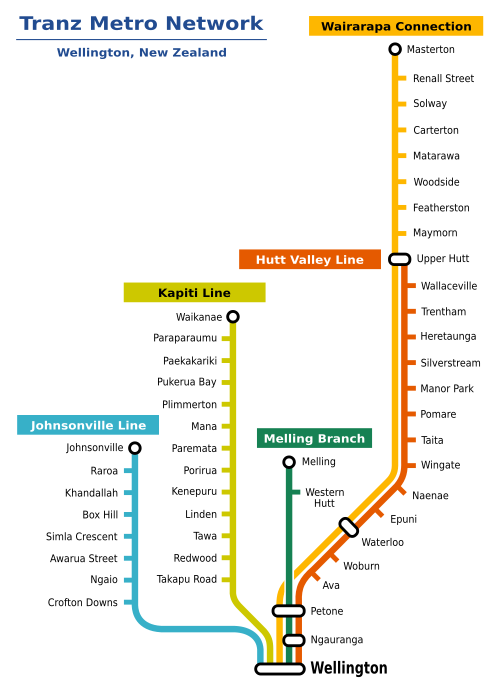
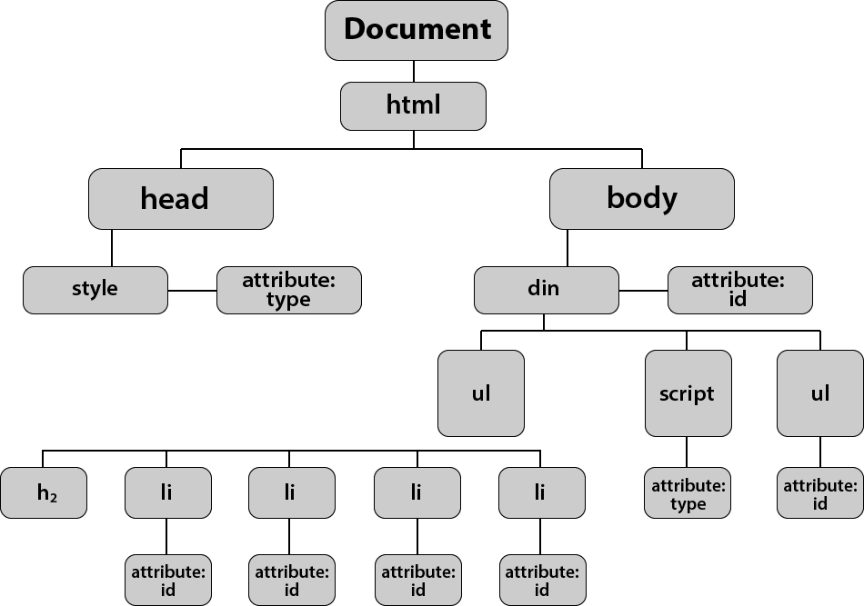
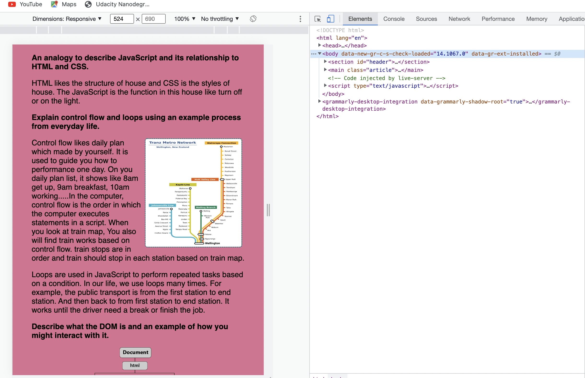
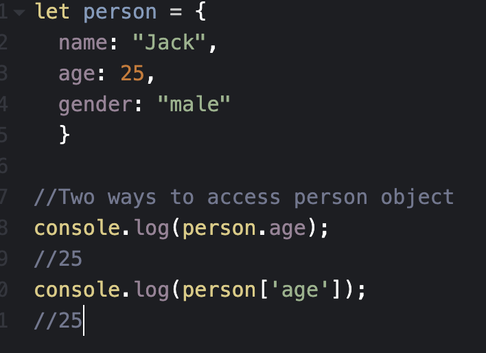
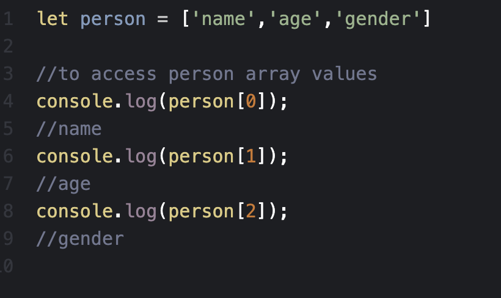
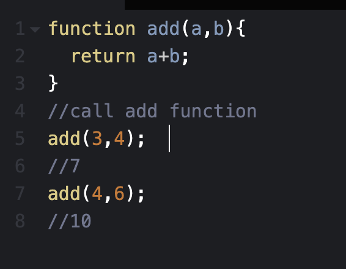

JS Fundamentals
An analogy to describe JavaScript and its relationship to HTML and CSS.
The house example can be used to describe the relationship between HTML, CSS and JavaScript. A house has 2 bedrooms, 2 bathrooms and 2 stories. That is the HTML of the building. It is made of brick and has a solid wood door. That corresponds to the CSS of the building. JavaScript is the things that you interact with in your home. You can eat, sleep, make meals and anything that you do at home.
HTML is the structure of the page itself. A CSS file contains the styling of the page. It allows you to change colors, positioning and more. JavaScript determines the dynamic and interactive elements on the page. It determines what happens when users click, hover or type within certain elements. This is kind of like the functionality of the building.
Explain control flow and loops using an example process from everyday life.
Control flow likes a daily plan made by yourself. It is used to guide you on how to perform one day. On your daily plan list, it shows like 8 am get up, 9 am breakfast, and 10 am working.....In the computer, control flow is the order in which the computer executes statements in a script. When you look at the train map, You also will find train works based on control flow. train stops are in order and the train should stop at each station based on the train map.
Loops are used in JavaScript to perform repeated tasks based on a condition. In our life, we use loops many times. For example, the public transport is from the first station to the end station. And then back from the first station to the end station. It works until the driver needs a break or finishes the job.
Describe what the DOM is and an example of how you might interact with it.
DOM means Document Object Model and it defines the logical structure of documents and the way a document is accessed and manipulated. It is a programming interface that allows us to create, change, or remove HTML elements from the document. We can also add events to these elements to make our page more dynamic.
As seen in the diagram, DOM looks like a tree and HTML elements and attributes are the branches. JavaScript is used to manipulate these HTML elements or attributes based on DOM. In order to manipulate DOM, JavaScript functions are used and we should create an event to callback these functions.
If you want to interact with DOM, the simple way is to open dev tools by right-clicking the mouse or trackpad and navigating down to "inspect". You will find the window like the picture below. Just click the element, and change something you want. these changes are not permanent. They will revert to what they were when the page is refreshed!
Explain the difference between accessing data from arrays and objects.
Object are mutable data structure in javascript and it contains many values. It uses properties to store the data in key-value pair and the key can be anything except undefined. The keys are iterable and can be accessed in any order.
There are two ways to access the object properties: dot notation and bracket notation. You can look at the picture below, the two ways can get some value from the person object.
Arrays are a special type of object. Array is almost the same as object. It also contains many values. It also has keys and values. The main difference is that the key of array starts from 0 and The keys are in order.
For array, we can only use bracket notation to access the value as array stores the ordered data. You can only access the value based on the index. You can look at the picture below, the person[0] means the first element of the array. So the result is the name.
Explain what functions are and why they are helpful.
A function is like a math equation but with code, it is "self contained" modules of code that are designed to perform a specific task. Functions usually "take in" data, process it, and "return" a result. Once a function is defined, it can be used many times by changing input variables.
Functions are helpful. Once a function is defined, it can be used many times by changing input variables. It makes our code a lot less redundant. When you look at the add function, you can find the add function can be used many times by changing two parameter values.
